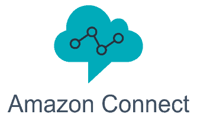
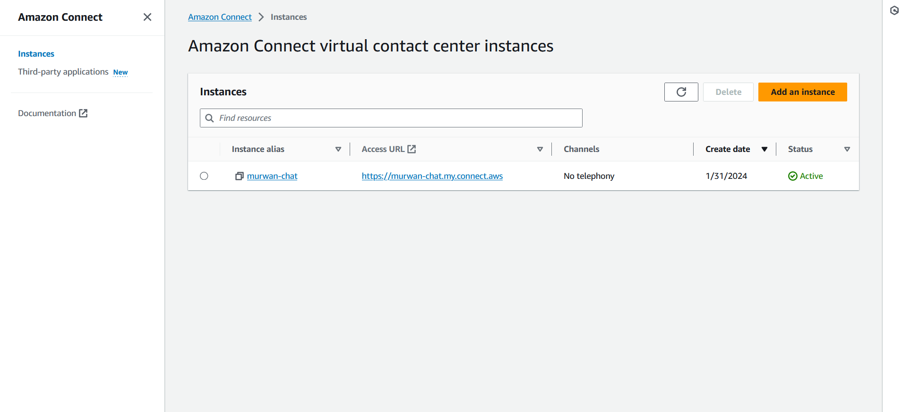
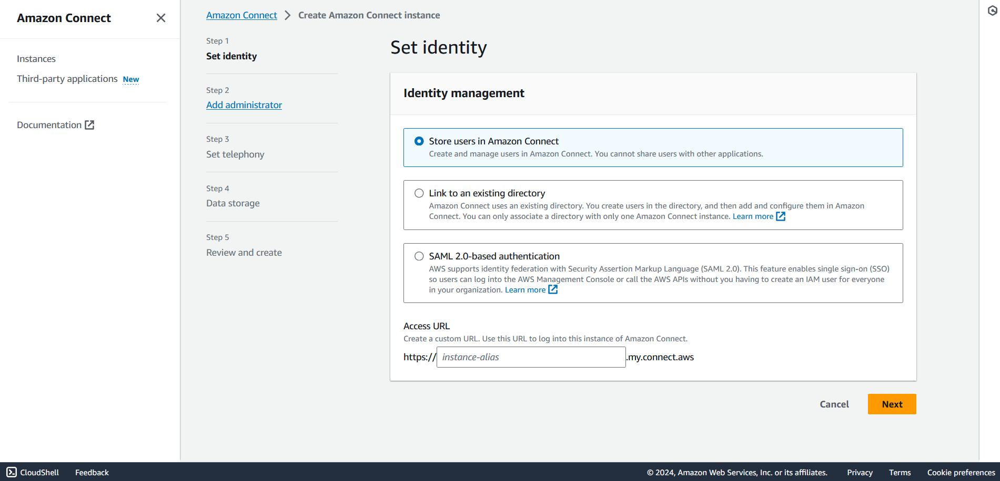
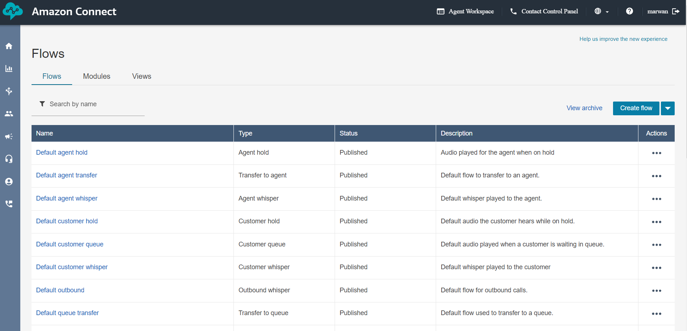
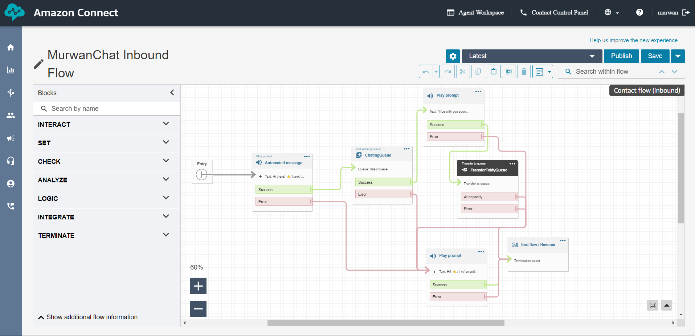
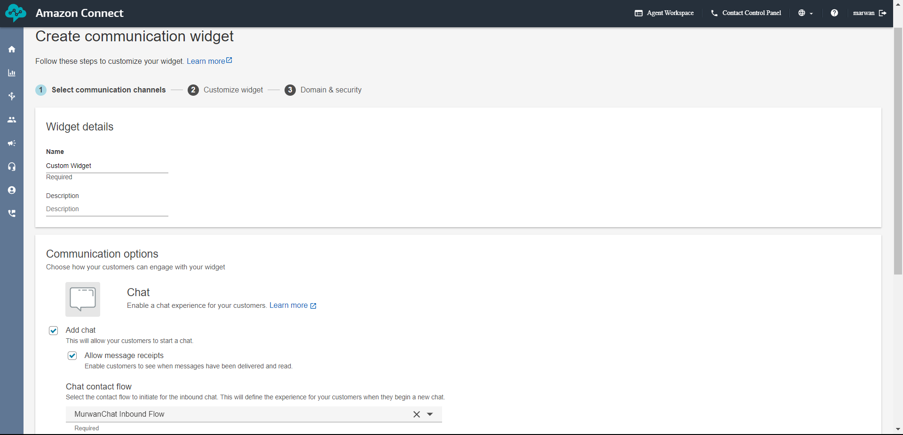
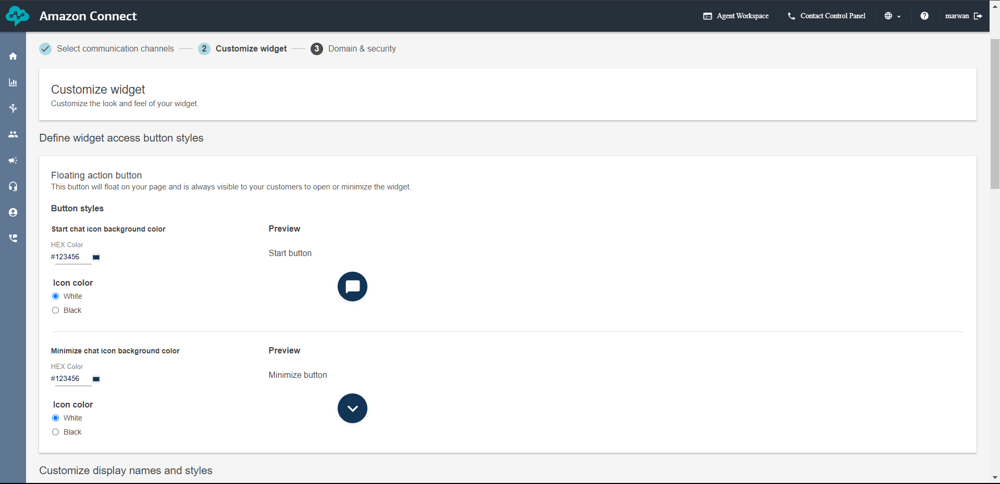
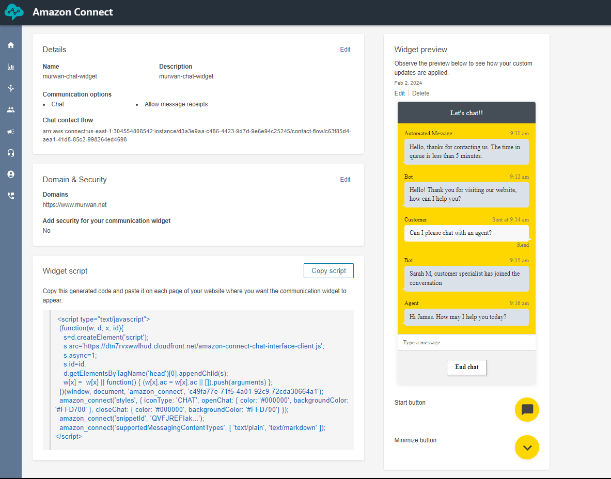
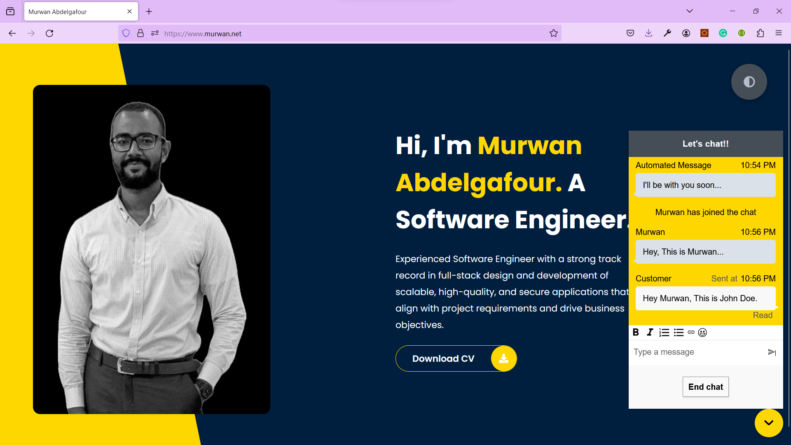

Building a Live Chat Widget for Your Portfolio Website with AWS Connect.
Introduction
In the modern world of technology, being able to communicate well is crucial,
especially when you want to connect with employers, recruiters, or people checking out your portfolio website.
A great way to make this communication even better is by adding a live chat feature.
In this blog post, I'll show you the steps of how I added AWS Connect, a cloud-based contact center service,
to my portfolio website.
Amazon Connect is an omnichannel cloud contact center. You can set up a contact center in a few steps,
add agents who are located anywhere, and start engaging with your customers.
This made the chat experience more personalized and efficient.
Step 1: Setting Up an Amazon Connect Virtual Contact Center Instance
I started with creating an Amazon Connect virtual contact center instance from the AWS console. Each instance contains all the resources and settings related to your contact center.
I added the domain from which chats will be initialized, specified admins to access the instance, and data storage for the instance.
Step 2: Designing the Customer Experience Flow
Once the virtual contact center is set up, I logged in to create a flow, A flow defines the customer experience with your contact center from start to finish. Amazon Connect includes a set of default flows so you can quickly set up and run a contact center. However, you may want to create custom flows for your specific scenario.
My customed flow includes a welcoming automated message when someone starts a chat and places them in a queue until I join the conversation from the agent workspace.
Step 3: Creating Rules for Notifications
To ensure I never miss a chat request, I established a rule in AWS Connect.
A rule is an action that Amazon Connect automatically performs, based on conditions you specify.
This rule triggers an automatic email notification whenever someone is placed in the queue,
giving me real-time alerts and enabling prompt responses.
Step 4: Generating a Communication Widget
The communication widget, aka the live chat widget, is a crucial component. I configured it by selecting the flow created in Step 2 and customized its style to align with the aesthetics of my portfolio website.
 Step 5: Implementing the JavaScript Code
With the configuration complete, AWS Connect generated a JavaScript code for the communication widget. Implementing this code into my frontend was a breeze – a simple copy-paste action seamlessly integrated the live chat functionality into my website.
Integrating AWS Connect's live chat widget into my portfolio website has not only added a professional touch but has also significantly improved communication with my audience. By following these simple steps, you too can enhance your website's functionality and create a more engaging and responsive user experience.
